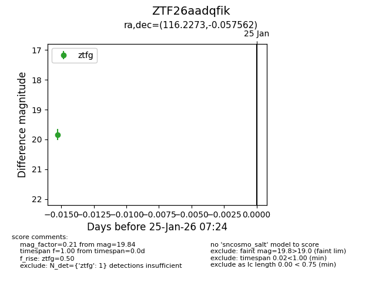
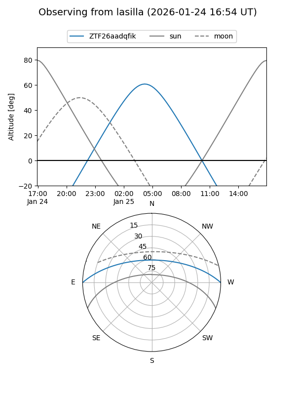
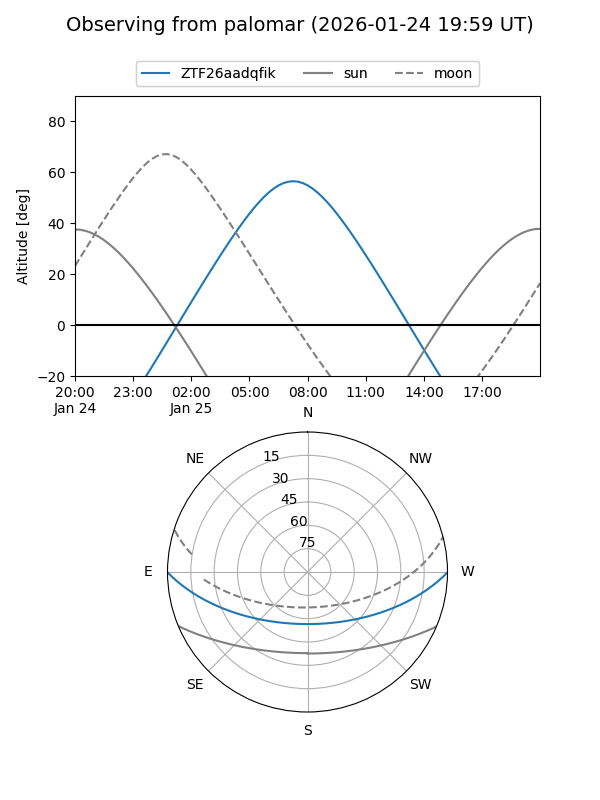

ZTF26aadqfik
Target ZTF26aadqfik at 2026-01-25 07:26
Aliases and brokers:
FINK: link
Lasair: link
ALeRCE: link
alt names
ZTF26aadqfik (ztf,fink_ztf)
Coordinates:
equatorial (ra, dec) = 116.2273,-0.05756
equatorial (HMS+DMS) = 07:44:54.55,-00:03:27.22
galactic (l, b) = (219.1684,+11.84754)
Flags:
Photometry:
last ztfg=19.84
1 ztfg detections
Lightcurve

Visibility


Additional plots